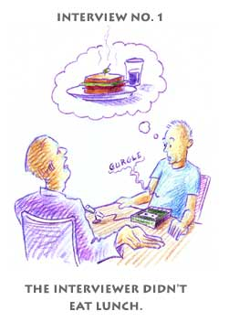
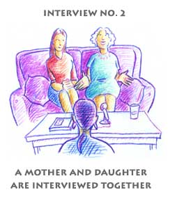
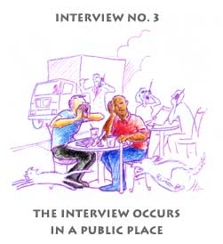

The interviewer only hears words that rhyme with pastrami and rye.
The subject, disturbed by the rumbling of the interviewer's stomach, loses his train of thought.
The famished interviewer rushes to finish the session to get to Roy Roger's.
Two subjects might overwhelm one interviewer.
Sharing a microphone creates an unconscious generational rivalry.
There are just certain things a daughter won't say in front of her mother... and vice versa.


Microwaves emanating from nearby cellular phones erase the tape.
Passing pedestrians and motorists interrupt the interview to get in a word.
Surrounding noise and activity divert the subject's attention.